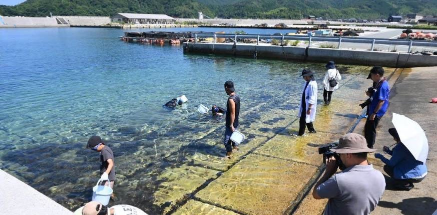
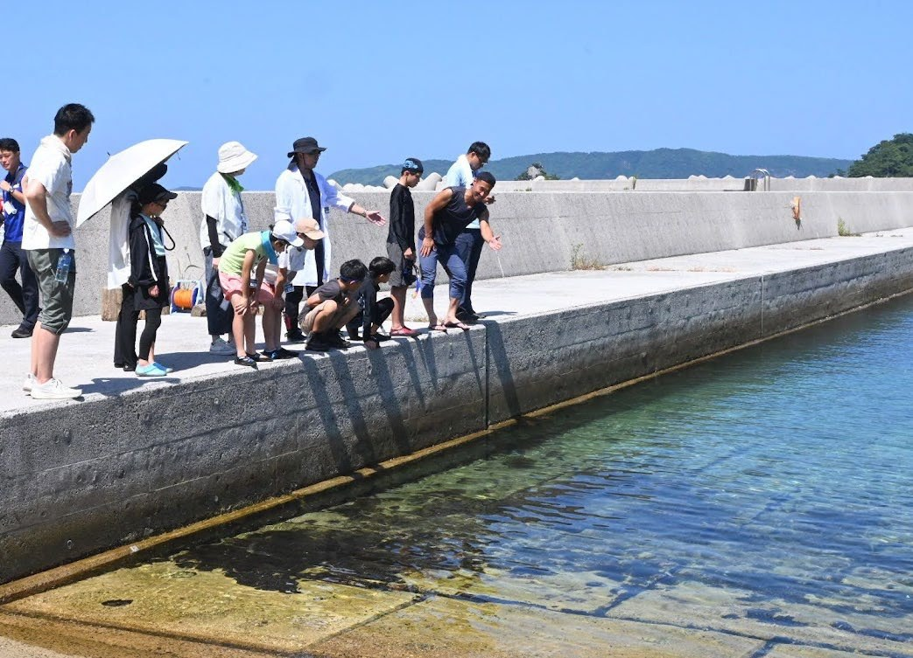
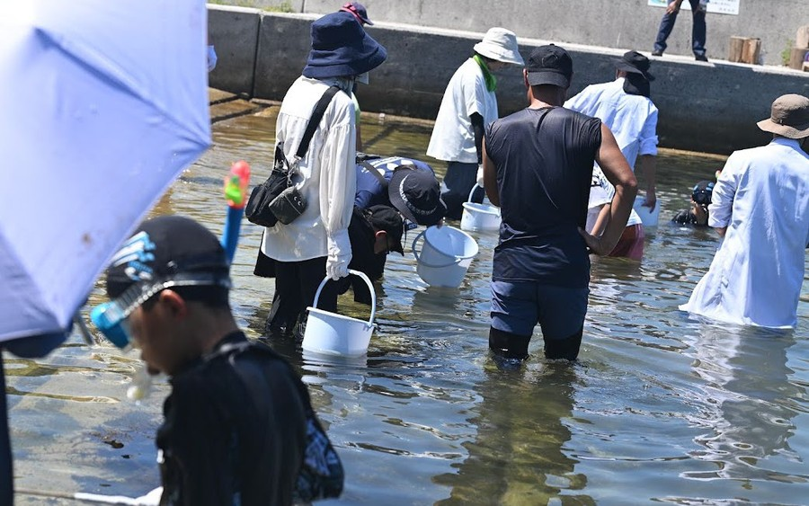
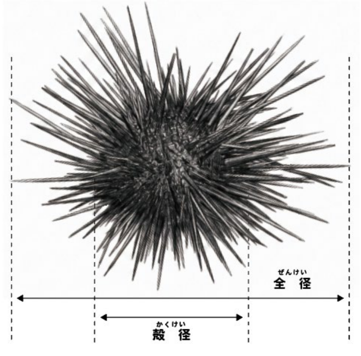
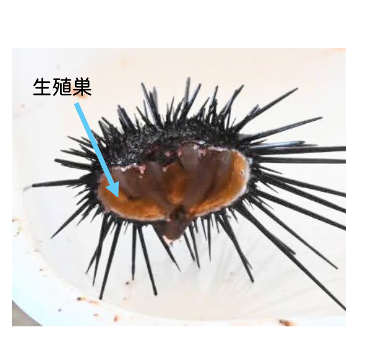
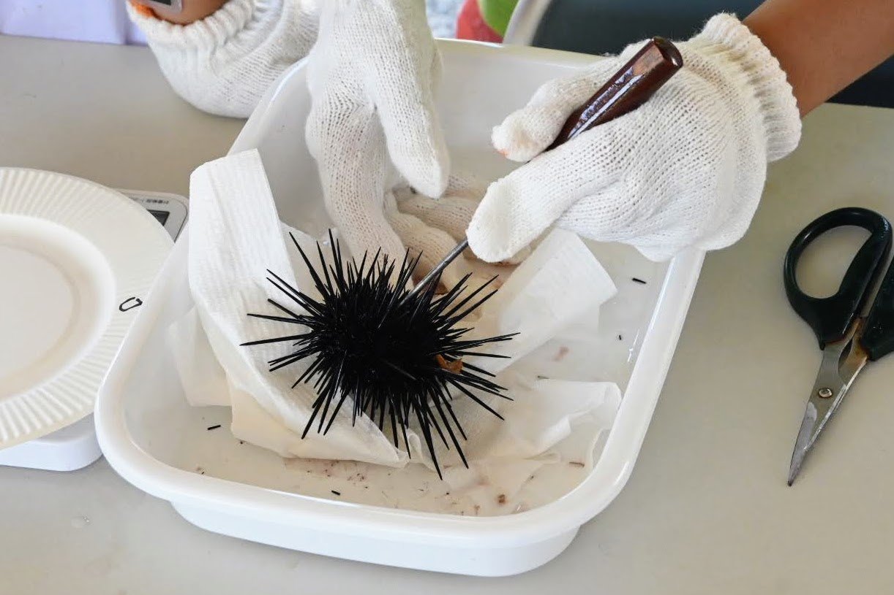
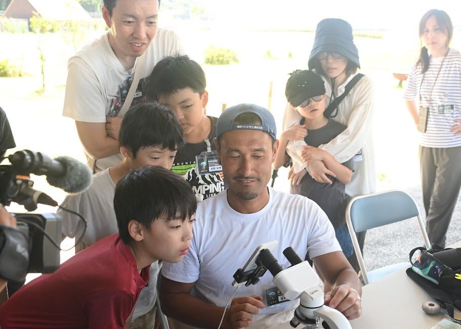

協力福本商店・阿武町
ウニは、昔からこの地域で食べられてきたおいしい海の恵みです。いっぽうで、海藻が減る「磯焼け」の原因のひとつだといわれ、阿武町を含めて全国各地で駆除も行われています。しかし、どの時期にどれぐらいの大きさで、身の入り具合はどうかなど、奈古のウニの実際の生態は、ほとんど調べられていません。これからの海について考える手がかりにするため、産卵期であるといわれている夏に、ウニがどのような状態で生きているのかを確かめます。第1回 調査レポート より
調査地の奈古は、阿武町の日本海に面したまちです。今回は、ABUキャンプフィールドの隣に位置する船溜まり内のスロープを調査地としました。波の影響が少なく、まっすぐな構造物を基準に範囲を決められるため、これから同じ条件で測りつづけることができます。


ウニのからだの外側は、かたい「殻（から）」と、そこから生えた「トゲ」でできています。この調査では、トゲをふくめた最大直径を全径、トゲをのぞいた殻の最大直径を殻径とし、その差の半分をトゲの長さ（換算値）としました。


生殖巣は、見た目は同じでもオスは精子、メスは卵をつくる器官で、繁殖期が近づくと大きくなります。体重のうち生殖巣がどれぐらいの割合をしめるかを GSI（生殖腺重量指数）といい、GSIが大きいほど実が入っていることになります。
生殖巣の重さ ÷ 体重 × 100
ムラサキウニを採集し、殻径・全径・トゲの長さ・体重・生殖巣の重さ・雌雄を計測しました。


現場には他種のウニも生息していました。全体的に黒紫色で、少し押しつぶされた球形の殻をもち、棘が比較的太く丈夫で、ガンガゼのように極端に細くてもろい棘をもたず、アカウニのような平たい殻に短い棘をもたない個体を、ムラサキウニと認識して採集しています。
奈古のスロープでは、時期を変えて同じ場所で計測を続けています。点のひとつひとつが、調査員が測った1個体です。点にふれると、その個体の数値が出ます。
7月22日は第1回 調査レポートの計測表から、8月13日は追加調査の記録から作図しています。
第1回（7月22日）は、採集しやすい深さに調査範囲を限定し、作業しやすいように大きめの個体を選んで計測しました。そのため、この結果だけで奈古の海にいるウニ全体の状況を言い切ることはできません。そのうえで、言える範囲で考えると、次のようになります。
ムラサキウニはおおよそ3歳で40mm前後、4歳で45〜50mm、5歳で50mm台という報告があり、寿命は11年以上とされます（水産庁「磯焼け対策ガイドライン」）。この目安でいえば、今回のウニは5歳以下の若い個体が多いことになります。歳をとると別の場所へ移るのか、大きくなった個体はとられているのか、この場所では大きく育ちにくいのか。今回の調査だけではわかりません。
殻の大きさから、トゲの長さも実入りも予測できませんでした。つまり、このウニが今どんな状態にあるかは、外から見ても分かりません。今回のように、ひとつひとつ割って測るしか方法がないということが分かりました。
オスはGSIが1.2から10.1までまんべんなく散らばっていたのに対して、メスはほとんど空の個体と、やや多く入った個体に分かれました。山口県でのウニの産卵時期は6〜7月ごろといわれ、7月22日はその終わりごろにあたります。メスの多くはすでに産卵を終えていて、まだ一部だけ残っていた、という見方ができます。
磯焼けが進んだ海のムラサキウニは、GSIが1〜2程度と低いという報告があります（水産庁「磯焼け対策ガイドライン」）。今回調査したサイズの個体にかぎれば、GSIの平均は4.7で、磯焼け状態で報告される値よりは高い数字でした。実入りはエサである海藻がどれぐらいあるかで変わるといわれているため、この場所は海藻がまったく無い状態ではない、ということかもしれません。
第1回では、作業しやすいように大きめの個体を選んでいました。8月13日は区画を決めて、その中にいた個体をすべて採集し、すべて記録しました。人の目で選ぶと結果がゆがむためです。109個体のうち、殻径35mmに満たない個体が59個体を占めました。
雌雄を見分けられなかったのは27個体で、いずれも殻径39.5mm以下でした。殻径25mmに満たない個体は、すべて雌雄を見分けられませんでした。
区画の全個体で平均すると、GSIは第1回の4.7に対して3.3でした。ただしこれは海が変わったのではなく、実入りの少ない小さな個体が多く入ったためです。殻径35mm以上にそろえて計算し直すと、4.8と4.5でほとんど変わりません。どこまでを測ったかを決めておくことが、回どうしを比べられる記録にします。
2回の調査をふまえ、次回からは採集と殻径の計測は区画内の全個体、殻を割って生殖巣を取り出す計測は殻径35mm以上にしぼる予定です。小さな個体は割って測ると誤差が大きくなるためです。どこまでを測ったかを決めておくことが、回どうしを比べられる記録にします。
時期を変えて調査を続ければ、産卵がいつ始まり、いつ・何度のピークを迎え、いつ終わるのかが見えてきそうです。今がどんな状態かを記録しておかなければ、海がどう変わったのかを知ることはできません。ウニラボは、この場所で測りつづけます。